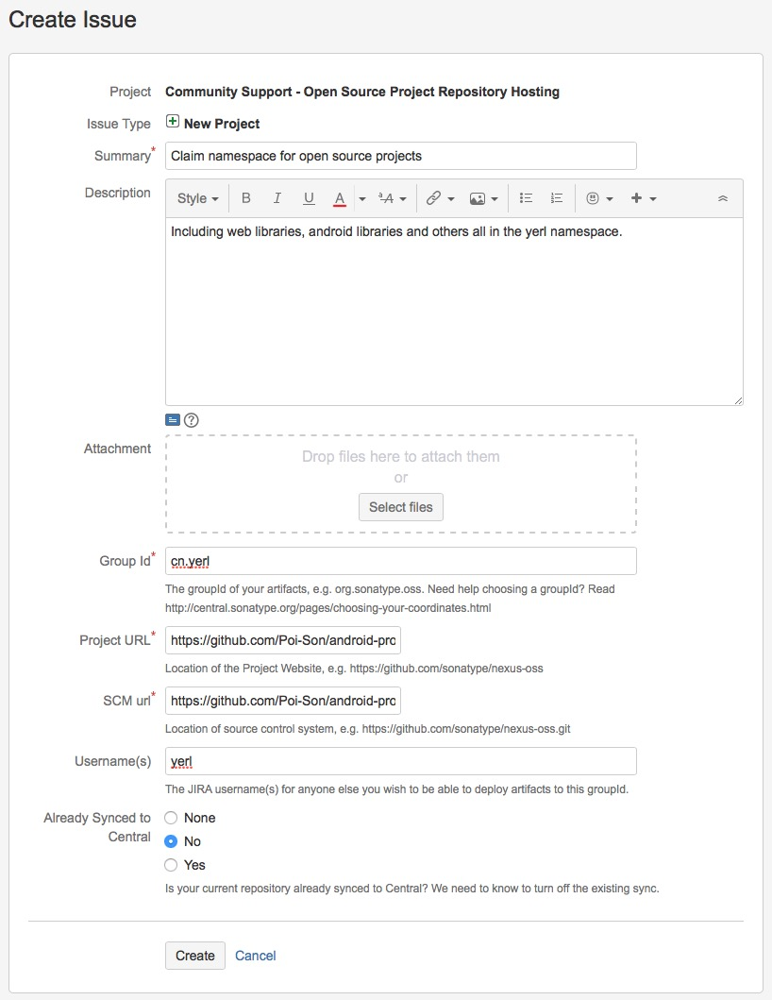
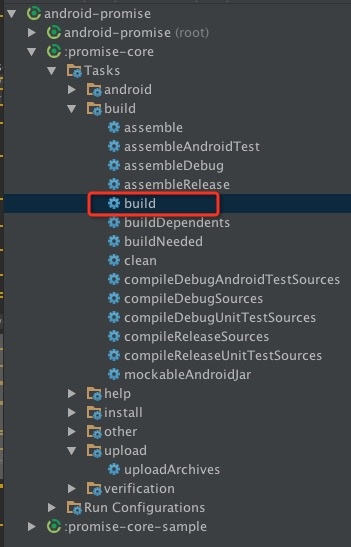
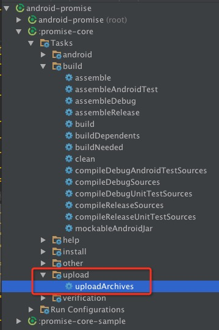
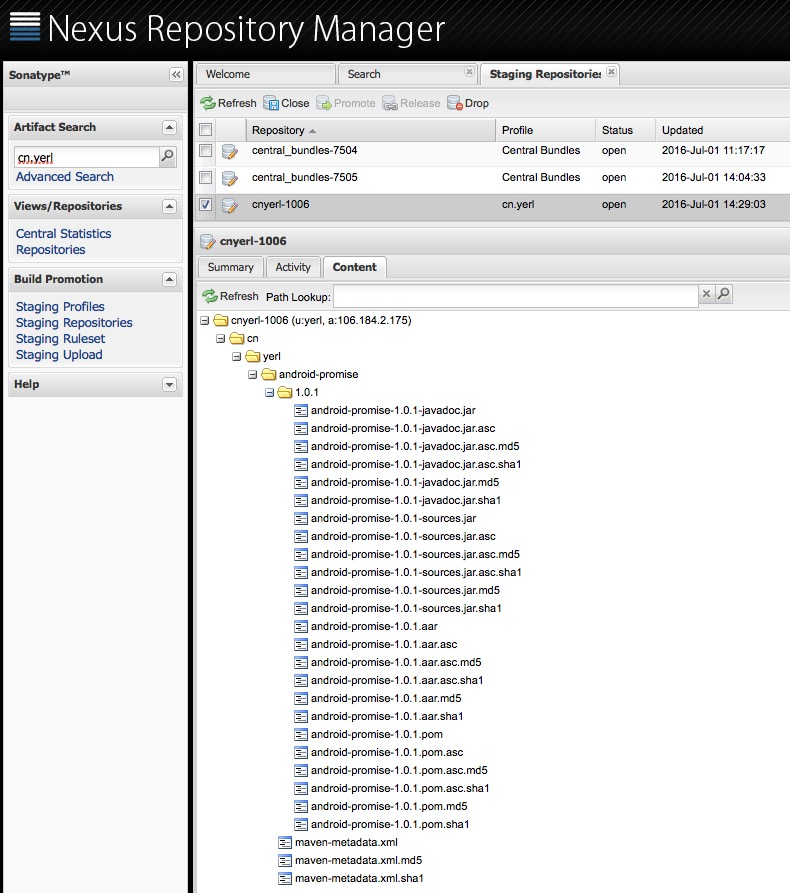
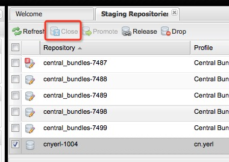
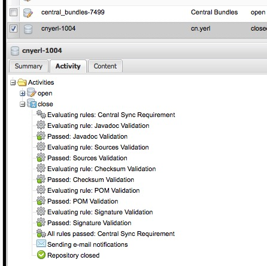
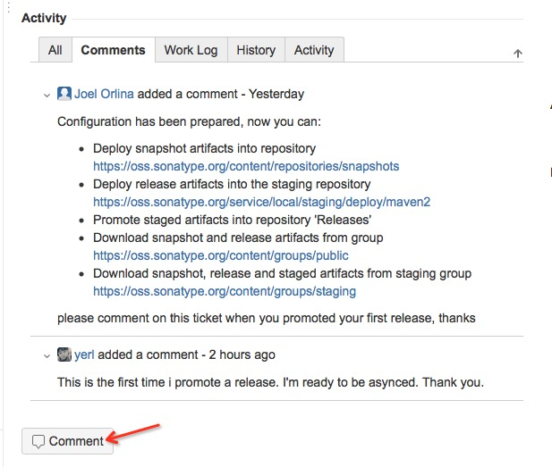

现在Maven几乎成了Java事实上的包管理工具了，Gradle作为后起之秀，也是建立在Maven现有的大量仓库资源之上。使用Maven Central Repository可以很方便地解决第三方库依赖问题。那么，如何将自己开发的包也发布到Maven Central Repository上去呢？
Sonatype提供开源项目仓库托管(Open Source Software Repository Hosting，简称OSSRH)服务。但是发布到Sonatype的过程还是比较麻烦的，还是写个博客记录一下。
申请空间
在Sonatype发布项目，首先得在中央库里申请空间。这个空间可以理解为Group ID，即你的项目都是放在这个目录之下。
注册JIRA
在这里注册一个Sonatype的JIRA帐号。这个没什么好说的，跳过。
申请空间
在这里填写一个表单。

特别注意这几项
- Group Id：填写你的域名，如果没有域名可以用GitHub的域名(com.github.username)。
- Project URL：GitHub的项目地址
- SCM url：GitHub项目的git clone地址
填写完了之后提交。一般来说2个工作日内，这个Issue的状态会变成RESOLVED状态。同时，有一个邮件会发送到你的注册邮箱，邮件正文会附上Sonatype Nexus的上传等地址。
Configuration has been prepared, now you can:
* Deploy snapshot artifacts into repository https://oss.sonatype.org/content/repositories/snapshots
* Deploy release artifacts into the staging repository https://oss.sonatype.org/service/local/staging/deploy/maven2
* Promote staged artifacts into repository 'Releases'
* Download snapshot and release artifacts from group https://oss.sonatype.org/content/groups/public
* Download snapshot, release and staged artifacts from staging group https://oss.sonatype.org/content/groups/staging
please comment on this ticket when you promoted your first release, thanks
由于是第一次提交，所以在完成后面的步骤后，需要回来回复一下JIRA的Issue。
上传库
这里以安卓库为例子。
GnuPG
安装GnuPG。在下载页面最下方，按你自己的系统选择对应的安装包。我选择了OS X。安装完之后，使用命令行生成密码。
$ gpg --gen-key
根据提示填写姓名、邮箱、备注等。生成完了之后，可以用以下命令查看key内容。
$ gpg --list-keys
/Users/PoiSon/.gnupg/pubring.gpg
--------------------------------
pub 2048R/E2F25563 2016-06-29
uid [ultimate] poison (yerl) <git@yerl.cn>
sub 2048R/5D8F2176 2016-06-29
E2F25563是key id，需要将它上报给服务器。
gpg --keyserver hkp://pool.sks-keyservers.net --send-keys E2F25563
如果还不是很清楚，可以查看官方指导。
生成库
Android Studio使用Gradle作为项目编译、库依赖工作，那么这里就以Gradle为例子，看如何生成jar包并上传到Sonatype的服务器上。
将以下的内容复制到Android Studio项目下的根目录下的upload.gradle文件里。
upload.gradle
apply plugin: 'maven'
apply plugin: 'signing'
afterEvaluate { project ->
uploadArchives {
repositories {
mavenDeployer {
beforeDeployment { MavenDeployment deployment -> signing.signPom(deployment) }
repository(url: RELEASE_REPOSITORY_URL) {
authentication(userName: NEXUS_USERNAME, password: NEXUS_PASSWORD)
}
snapshotRepository(url: SNAPSHOT_REPOSITORY_URL) {
authentication(userName: NEXUS_USERNAME, password: NEXUS_PASSWORD)
}
pom.project {
groupId POM_GROUP_ID
artifactId POM_ARTIFACT_ID
version POM_VERSION
packaging POM_PACKAGING
name SONATYPE_NAME
description SONATYPE_DESCRIPTION
url SONATYPE_URL
licenses {
license {
name SONATYPE_LICENCE_NAME
url SONATYPE_LICENCE_URL
}
}
developers {
developer {
name SONATYPE_DEVELOPER_NAME
email SONATYPE_DEVELOPER_EMAIL
}
}
scm {
connection SONATYPE_SCM_CONNECTION
developerConnection SONATYPE_SCM_DEVELOPER_CONNECTION
url SONATYPE_SCM_URL
}
}
}
}
}
task installArchives(type: Upload) {
description "Installs the artifacts to the local Maven repository."
configuration = configurations['archives']
repositories {
mavenDeployer {
pom.groupId = POM_GROUP_ID
pom.artifactId = POM_ARTIFACT_ID
pom.version = POM_VERSION
repository url: "file://${System.properties['user.home']}/.m2/repository"
}
}
}
signing {
sign configurations.archives
}
task androidJavadocs(type: Javadoc) {
source = android.sourceSets.main.java.srcDirs
classpath += project.files(android.getBootClasspath().join(File.pathSeparator))
}
task androidJavadocsJar(type: Jar, dependsOn: androidJavadocs) {
classifier = 'javadoc'
from androidJavadocs.destinationDir
}
task androidSourcesJar(type: Jar) {
classifier = 'sources'
from android.sourceSets.main.java.srcDirs
}
artifacts {
archives androidSourcesJar
archives androidJavadocsJar
}
}
这段Gradle脚本用于生成Sonatype Nexus要求的所有文件，包括
xxxx-xxxx.jar库的打包文件。Android的库文件后缀名为aar。xxxx-xxxx.jar.ascPGP签名xxxx-xxxx-javadoc.jar项目生成的documentxxxx-xxxx-javadoc.jar.ascPGP签名xxxx-xxxx-sources.jar项目的源代码xxxx-xxxx-sources.jar.ascPGP签名
同时，这段脚本还可以将生成的文件、pom等上传到Sonatype Nexus服务器上。
修改gradle.properties，按需修改以下属性设置。
gradle.properties
# POM属性设置
POM_VERSION=1.0.1
POM_GROUP_ID=cn.yerl
POM_ARTIFACT_ID=android-promise
POM_PACKAGING=aar
# sonatype.org要求的相关属性
#-> Project Name, Description and URL
SONATYPE_NAME=Android Promise Core
SONATYPE_DESCRIPTION=A promise implementation for Android
SONATYPE_URL=https://github.com/Poi-Son/android-promise
#-> License Information
SONATYPE_LICENCE_NAME=The Apache Software License, Version 2.0
SONATYPE_LICENCE_URL=https://www.apache.org/licenses/LICENSE-2.0.txt
#-> Developer Information
SONATYPE_DEVELOPER_NAME=yerl
SONATYPE_DEVELOPER_EMAIL=git@yerl.cn
#-> SCM Information
SONATYPE_SCM_CONNECTION=scm:git:git@github.com:Poi-Son/android-promise.git
SONATYPE_SCM_DEVELOPER_CONNECTION=scm:git:git@github.com:Poi-Son/android-promise.git
SONATYPE_SCM_URL=git@github.com:Poi-Son/android-promise.git
# 如果想上传到私服,则将这个改成私服的地址
RELEASE_REPOSITORY_URL=https://oss.sonatype.org/service/local/staging/deploy/maven2
SNAPSHOT_REPOSITORY_URL=https://oss.sonatype.org/content/repositories/snapshots
另外，由于上传时需要帐号密码、密钥相关信息，如果将这些信息放在项目下的gradle.properties里，并上传到GitHub上的话，会造成信息泄露。因此，可以将这些信息放在~/.gradle/gradle.properties文件里。
# NEXUS用户名和密码
NEXUS_USERNAME=your nexus username
NEXUS_PASSWORD=your nexus password
# 密钥配置
signing.keyId=your pgp key id
signing.password=your gpg password
signing.secretKeyRingFile=your gpg secring file
signing.secretKeyRingFile的目录一般是这样的：~/.gnupg/secring.gpg
修改一下库项目的build.gradle文件。
build.gradle
apply plugin: 'com.android.library'
apply from: '../upload.gradle'
android {
compileSdkVersion 24
buildToolsVersion "24.0.0"
defaultConfig {
minSdkVersion 14
targetSdkVersion 24
}
lintOptions {
xmlReport false
warningsAsErrors true
quiet false
showAll true
disable 'OldTargetApi'
}
compileOptions {
sourceCompatibility JavaVersion.VERSION_1_7
targetCompatibility JavaVersion.VERSION_1_7
}
}
afterEvaluate { project ->
android.libraryVariants.all { variant ->
tasks.androidJavadocs.doFirst {
classpath += files(variant.javaCompile.classpath.files)
}
}
}
dependencies {
compile fileTree(dir: 'libs', include: ['*.jar'])
testCompile 'junit:junit:4.12'
}
在gradle运行build任务

如果以上配置都正确的话，你应该在该项目下的build/libs目录下找到4个文件。
xxxx-xxxx-javadoc.jarxxxx-xxxx-javadoc.jar.ascxxxx-xxxx-sources.jarxxxx-xxxx-sources.jar.asc
上传库
生成好库之后，就需要将它上传到Sonatype Nexus里去了。上传非常简单，运行Gradle uploadArchives任务就可以了。

当在Android的控制台上看到BUILD SUCCESSFUL，我们来到Sonatype Nexus Repository Manager，来看看是否上传成功了。
如果你在控制台上看到Could not find metadata cn.yerl:android-promise/maven-metadata.xml in remote (https://oss.sonatype.org/service/local/staging/deploy/maven2)，不需要理会。
登录后，在左侧菜单选择Staging Repositories菜单。在打开的菜单的列表里，找到一个比较特殊的仓库(其它仓库都是以central_bundles-xxxx命令，这个特殊的仓库一般以你的group id命名)。勾选它，并打开Content选项卡，展开所有目录。

如果你的结构与上图差不多，那么恭喜你，你快成功了。否则，回去检查一下哪一步出错了。
点击Close。这个操作会触发检验操作，系统会自动检验你上传的包是否符合条件。

几秒之后，Refresh。再打开页面。如果你的状态下图所示，那么恭喜你，一切顺利。不然，根据错误提示，修改你上传的包。

现在，你的库已经可以发布了，点击Release即可。
回复JIRA
由于是第一次发布库，因此，还需要回到JIRA的Issue，回复审批人，告诉他，你已经准备好发布你的库了，请将库同步到Maven Central Repository里。

等待审批人回复之后，大概10分钟到2个小时，你的库便已经同步到中央库了。
更新
更新操作就非常简单了，只需要在gradle.properties文件里，将POM_VERSION的版本改为你想要的新版本，然后运行gradle uploadArchives，然后在Sonatype Nexus里面删掉aar相关的文件，然后Close、Release即可。过一段时间后，中央库就会同步过来了。
据说Sonatype Nexus是每2个小时同步一次，所以可能需要等待一段时间才可以使用。
发布新的包
与更新一样的步骤，不需要完全走完所有流程。
以上内容不是特别完整，可以在这里查看上传的完整流程。